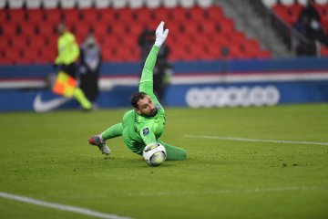
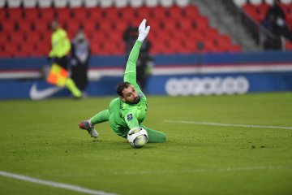
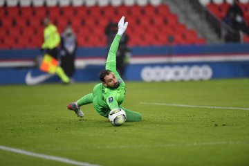
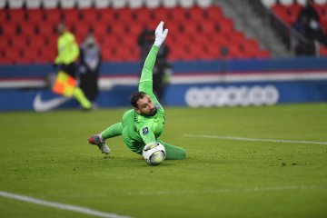
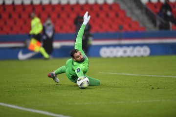

Passions
controles | pleine ecran | slide automatique

Controls
When carrousel in focus-state (white outline)
Description
Click
Key
precedente / prochaine slide
gauche / droite fleche
go to n-th slide
1-9 (single)
defilement automatique
espace
pleine ecran
enter
Pleine ecran
Double clique image
maintenir le control
C / c


 

 
